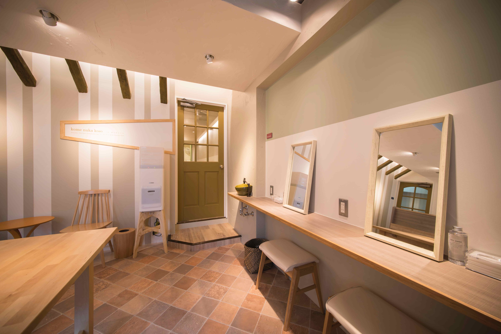

米ぬかとは
電気やガスなどの人工熱を使用せず、 自然発酵による発酵熱を使用したお風呂のことです 。 博多KOSOサロンでは、米ぬか100%と水と空気を 使用して発酵させています。 微生物の力で米ぬかが発酵し、 発酵する過程の発熱を利用して入浴するのが酵素風呂です。
米ぬかとは電気やガスなどの人工熱を使用せず、 自然発酵による発酵熱を使用したお風呂のことです 。 博多KOSOサロンでは、米ぬか100%と水と空気を 使用して発酵させています。 微生物の力で米ぬかが発酵し、 発酵する過程の発熱を利用して入浴するのが酵素風呂です。
米ぬかとは主に九州産の脱脂米ぬかを使用し、水と空気以外の添加物は使用せず自然発酵させた米ぬか酵素風呂です。 博多KOSOサロンの米ぬか酵素風呂の温度は 60度～68度程度で、微生物が一番元気に活発に過ごせる温度に保つように手入れをしています。 実際にその温度の酵素風呂に入ると体感温度は39度～41度で家庭のお風呂と変わりありません。
博多KOSOサロンについて| 住所 | 〒812-0014 福岡県福岡市博多区比恵町2-28 |
| 駐車場 | 平日は近くのコインパーキングをご利用ください。 土日や祝日は当施設の駐車場を利用できます。 ご予約時にお知らせください。 |
| アクセス | 博多駅から徒歩15分 瑞穂バス停から徒歩5分 |
| 営業時間 | ・金曜日/日曜日10:00~17:00 |
| ・土曜日10:00~18:00 | |
| ・火曜日/水曜日10:00~20:00 | |
| 定休日 | 月曜日/木曜日/第5日曜日 |